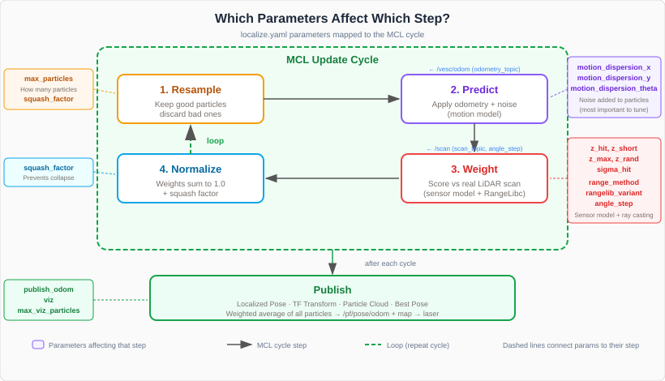

Tuning the Particle Filter (localize.yaml)¶
The particle filter’s behavior is controlled entirely by localize.yaml. This page explains every parameter and highlights which ones you should tune to improve localization quality.


To edit the config:
code ~/f1tenth_ws/src/f1tenth_system/particle_filter/config/localize.yaml
After making changes, rebuild and re-source:
cd ~/f1tenth_ws
colcon build --packages-select particle_filter
source install/setup.bash
Topic Names¶
scan_topic: '/scan'
odometry_topic: '/odom'
These must match the topics your robot publishes. On the standard F1TENTH stack:
/scan— LiDAR data from the Hokuyo or RPLiDAR/odom— wheel odometry from the VESC
You should not need to change these unless your robot uses different topic names.
Particle Count¶
max_particles: 4000
The number of pose hypotheses the filter maintains. More particles means better accuracy but higher CPU cost.
Value |
Pros |
Cons |
|---|---|---|
1000 |
Very fast, low CPU |
May lose track in complex environments |
4000 (default) |
Good balance for Jetson Orin |
Moderate CPU usage |
8000+ |
Very robust localization |
High CPU, may slow down update rate |
When to change: If the filter frequently loses track (particles spread out and don’t converge), try increasing this. If CPU usage is too high and localization is already stable, try decreasing it.
LiDAR Downsampling¶
angle_step: 18
Takes every Nth LiDAR ray instead of using all ~1080. At angle_step: 18, the filter uses about 60 rays per scan.
Value |
Effect |
|---|---|
6 |
~180 rays — more accurate but significantly slower |
18 (default) |
~60 rays — good balance |
36 |
~30 rays — very fast but less accurate in complex environments |
When to change: If the filter is slow (low iterations per second), increase angle_step. If the environment has many narrow features (doorways, pillars), decrease it for finer angular resolution.
Motion Model Dispersion¶
motion_dispersion_x: 0.05
motion_dispersion_y: 0.025
motion_dispersion_theta: 0.25
These control how much random noise is added to each particle after applying odometry. They represent the standard deviation of Gaussian noise in meters (x, y) and radians (theta).
Important
If the particle filter is not performing well, start here. motion_dispersion_theta is the parameter you will adjust most often:
Too low — particles stay tightly clustered but can’t recover from heading errors. The filter “locks on” to a wrong heading and diverges.
Too high — particles spread too far, the cloud is always diffuse, and the pose estimate is noisy.
Symptom |
Adjustment |
|---|---|
Filter diverges at speed |
Increase |
Filter diverges in turns |
Increase |
Pose estimate is jittery |
Decrease |
Filter drifts sideways |
Increase |
Sensor Model Weights¶
z_short: 0.01
z_max: 0.07
z_rand: 0.12
z_hit: 0.75
sigma_hit: 8.0
These four z_ values control how the filter interprets differences between expected and actual LiDAR readings. They must sum to approximately 1.0 (they are normalized internally).
Parameter |
What It Models |
When to Adjust |
|---|---|---|
|
Measurement matches expected range (Gaussian) |
Rarely — this should stay dominant (0.7–0.8) |
|
Something blocked the beam early (person, furniture) |
Increase in environments with many dynamic obstacles |
|
LiDAR returned max range (no return) |
Increase if your environment has glass or dark surfaces |
|
Random noise / multipath reflections |
Increase in noisy or reflective environments |
sigma_hit controls the width of the Gaussian for z_hit. A larger value is more tolerant of small map inaccuracies but less precise. The default of 8.0 works well for most indoor environments.
The defaults work well for most indoor environments. Only adjust these if you have a specific problem like many dynamic obstacles or a very reflective environment.
Squash Factor¶
squash_factor: 2.2
This prevents particle collapse — where one particle gets an astronomically high weight and all others are discarded. The weight of each particle is raised to the power of 1/squash_factor.
Higher values (3.0+) — more diversity, filter is more exploratory but slower to converge
Lower values (1.5) — less diversity, converges faster but more fragile
1.0 — no squashing (not recommended — filter will collapse)
When to change: If particles converge too aggressively and the filter “snaps” to wrong positions, increase this. If the particle cloud never tightens, decrease it.
Ray Casting Method¶
range_method: 'rmgpu'
rangelib_variant: 2
theta_discretization: 112
range_method selects the RangeLibc algorithm for simulating LiDAR:
Method |
Speed |
Notes |
|---|---|---|
|
Fastest |
GPU ray marching — use on Jetson Orin (requires CUDA) |
|
Fast |
CPU-only — best fallback if no CUDA |
|
Fast |
Pruned CDDT variant |
|
Moderate |
CPU ray marching, no precomputation |
|
Slowest |
Bresenham’s line — use only for debugging |
rangelib_variant selects the evaluation strategy:
2 —
VAR_REPEAT_ANGLES_EVAL_SENSOR— best forrmgpu(default)3 —
VAR_REPEAT_ANGLES_EVAL_SENSOR_ONE_SHOT— does NOT work withrmgpu4 —
VAR_RADIAL_CDDT_OPTIMIZATIONS— only works withcddt/pcddt
For the Jetson Orin, use rmgpu with rangelib_variant: 2. If you see CUDA errors, switch to cddt with rangelib_variant: 4.
theta_discretization controls angular resolution for methods that precompute angles. The default of 112 works well and rarely needs changing.
Other Settings¶
max_range: 10
viz: 1
max_viz_particles: 60
fine_timing: 0
publish_odom: 1
Parameter |
Description |
|---|---|
|
Maximum LiDAR range in meters. Readings beyond this are clipped. Match your LiDAR’s spec. |
|
Enable (1) or disable (0) visualization topics. Disable for maximum performance. |
|
Number of particles sent to RViz2. Lower = less network overhead. Does not affect accuracy. |
|
Enable (1) to print per-step timing breakdowns. Useful for profiling, noisy in normal use. |
|
Enable (1) to publish |
Map Server Section¶
map_server:
ros__parameters:
map: 'lab_map_clean'
This tells the launch file which map to load. The value is the map name without the file extension — it looks for <map_name>.yaml and <map_name>.pgm in the particle filter’s own maps/ directory:
~/f1tenth_ws/src/f1tenth_system/particle_filter/maps/
The default map lab_map_clean is a pre-made map of the CAE lab that is ready to use. If this matches your environment, no changes are needed.
Using your own map: If you created a map with SLAM (see the SLAM tutorial), that map is stored in the f1tenth_stack maps directory:
~/f1tenth_ws/src/f1tenth_system/f1tenth_stack/maps/
The particle filter cannot access maps from f1tenth_stack — you need to copy both the .pgm and .yaml files into the particle filter’s maps/ directory:
cp ~/f1tenth_ws/src/f1tenth_system/f1tenth_stack/maps/hallway_map.pgm \
~/f1tenth_ws/src/f1tenth_system/particle_filter/maps/
cp ~/f1tenth_ws/src/f1tenth_system/f1tenth_stack/maps/hallway_map.yaml \
~/f1tenth_ws/src/f1tenth_system/particle_filter/maps/
Then update localize.yaml to point to your map:
map_server:
ros__parameters:
map: 'hallway_map'
After changing the map, rebuild so the new files are installed:
cd ~/f1tenth_ws
colcon build --packages-select particle_filter
source install/setup.bash
Recommended Starting Points for Tuning¶
If you are having trouble with localization, try these changes in order:
Re-set the initial pose — click 2D Pose Estimate accurately in RViz2
Increase
motion_dispersion_theta— try 0.35, then 0.5Increase
max_particles— try 6000 or 8000Decrease
angle_step— try 12 for more LiDAR raysCheck
odometry_topic— make sure it matches your robot’s odometry topic name
After each change, rebuild with colcon build --packages-select particle_filter and relaunch.